Estrutura de Contas (Níveis) 9
Relatório de Departamento e Usuário 22
Relatório de Departamento por Órgão 24
Acount de Dados do Sistema (Logs) 29
Libera Permissões de Menu por Perfil 38
Libera Permissões de Empenho 39
Manutenção de Documentos/Parágrafos 44
Manutenção de Documentos Padrões 49
Permite ao Usuário Alterar Base de Dados 50
Ativar e Desativar Trace Log 50
Troca data de Lançamento dos Empenhos 50
Configuração de Tela de Login 51
Inclusão de Classe PHP Externa 55
Módulo Configuração
Este módulo tem por objetivo final permitir o controle de todos os outros módulos, controle de usuários, departamento, senhas, perfis de acesso, dicionário de dados do sistema, gerador de programas e outras funcionalidades que servem de base para todo o sistema. Controle das instituições e autarquias que estarão utilizando o sistema.
Esta rotina destina-se ao cadastro dos itens de menu do sistema. Um programa (uma página web) é identificada adicionando-se um item de menu e ligando este item de menu a um outro item de menu, formando assim um árvore de acesso.
Sempre que desejarmos cria um árvore de menus, como por exemplo: Configuração->Cadastro->Item de Menu, devemos para cada item a ser acessado criar um item de menu e depois na rotina de organizar itens de menu, ligar um ao outro para formarmos um menu de acesso.
Diferente dos outros programas, nesta opção o usuário poderá incluir um item, alterar ou excluir.
Segue orientação para o preenchimento dos campos conforme ilustrado na figura 01.
Descrição: Campo onde deve ser inserido a descrição do item, esta descrição será listada na opção do menu.
Ajuda: Colocar neste campo a mensagem de ajuda que aparecerá na barra de status (linha inferior) do DBPortal.
Função: Colocar o nome da página web que será chamada quando o item de menu for clicado.
Descrição Técnica: Colocar a descrição técnica do programa, sua finalidade e principais características.
Ambiente: Selecionar qual o ambiente que será gerado o menu. Esta opção destina a opção de estarmos criando dois ambientes de programação, podendo dividir os menus em duas estruturas. Opção utilizada na construção do sistema e em desuso.
Módulo: Selecionando esta opção, este item de menu será demonstrado como um módulo e não como um item de menu e neste caso, na tela de inclusão de itens este não aparecerá. Caso seja cadastrado como módulo, este será automaticamente cadastro um grupo de itens e devera ser adicionado na opção de organizar menus os itens, cadastro, relatório, consulta e procedimento.
Nome: Colocar o nome do módulo que será apresentado na tela de seleção dos módulos e outras rotinas que mostra.
Descrição: Colocar a descrição do módulo que será apresentado na tela de seleção dos módulos e outras rotinas que mostra..
Imagem: Colocar a imagem que será exibida na tela dos módulos.
Tem Exercício: Selecionar se neste módulo terá controle por exercício.
Liberado p/ Cliente: Controla se este item de menu esta liberado para os clientes ou não.
Código: Colocar o código do procedimento ao qual este item de menu será integrado. Este código identifica um procedimento, um conjunto de ações executadas no sistema para atender a um processo de trabalho.
Selecione um programa: Colocar todos os programas (páginas webs) que estarão ligadas ao item de menu. Este campo é obrigatório quando um programa é incluído no campo Função.
f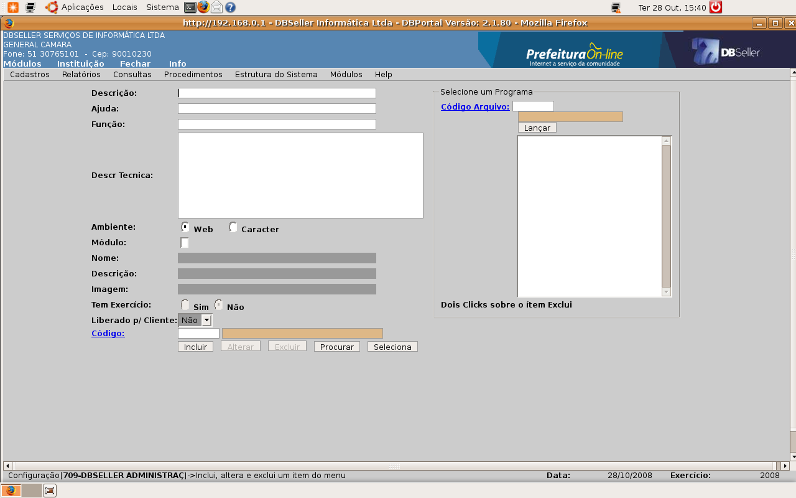
igura
001
Para inclusão de um item de menu, basta preencher os campos desejados e clicar no botão de inclusão, nunca esquecendo que quando for um item que será utilizado para carregar um programa, os arquivos deverão estar incluídos na tela de “Selecione um Programa”.
Para alterar um determinado item de menu, poderá ser selecionado o mesmo de duas formas:
a) Colocando a descrição do item de menu e depois clicando no botão “Procurar”, após o sistema mostrará uma lista com os menus que se enquadram na descrição digitada e clicando sobre qualquer um dos item listados no grid o sistema mostrará os dados do item de menu para alteração.
b) Clicando no botão “Seleciona”, o sistema mostra a lista dos módulos e se selecionado os módulos, mostrará a árvore dos itens de menus cadastrados para este módulo e clicando sobre o item o mesmo passa para a tela de alteração.
Para selecionar um item para a exclusão, segue-se os mesmos passos para alterar, onde além do botão alterar será liberarado também o botão excluir.
Esta rotina destina-se ao cadastro das regras de acesso ao sistema, pessoas ou computadores autorizados. Este procedimento é uma parte do conjunto de opções de segurança que estão disponíveis no DBPortal.
Nesta opção o usuário administrador poderá cadastrar um acesso para um computador ou pessoa por um determinado período de tempo e hora ou tampouco por tempo indeterminado.
A figura 002 motra a tela principal, como segue:
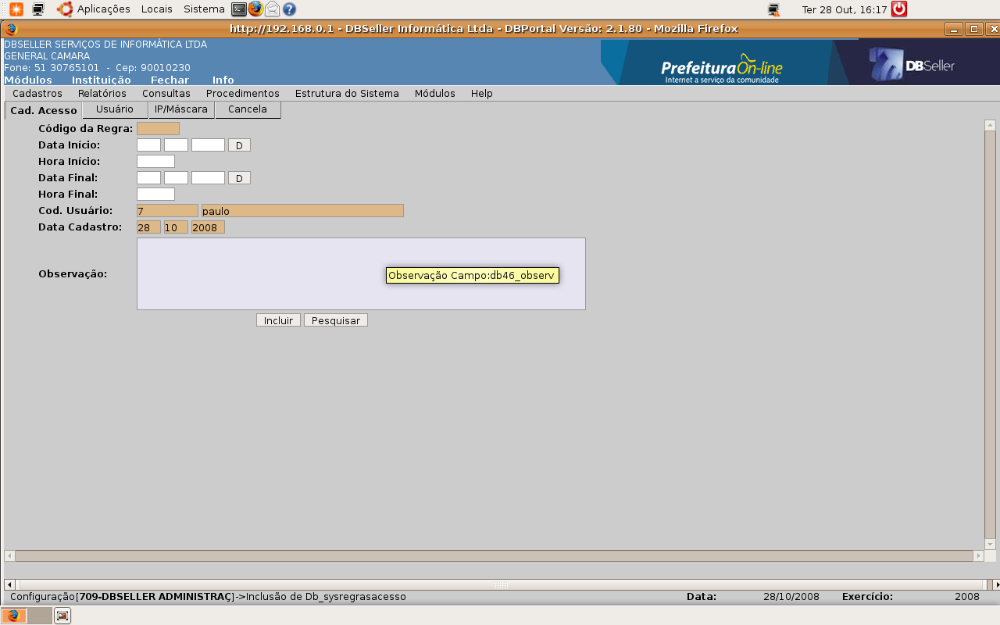
Figura
002
Código da Regra: Campo identifica o código da regra cadastrada.
Data Início: Data de início da validade da regra cadastrada.
Hora Início: Hora de início da validade da regra cadastrada.
Data Final: Data Final da validade da regra cadastrada.
Hora Final: Hora Final da validade da regra cadastrada.
Código do Usuário: Código do usuário que esta cadastrando a regra e nome do usuário.
Data Cadastro: Data do cadastro da regra.
Observação: Este campo destina-se ao registro das observações que ficarão registradas a cerca desta regra.
Após preencher os campos acima e clicar no botão de “Incluir”, o sistema libera as abas “Usuário”, “IP/Máscara”, “Cancela”.
Na aba de Usuário, o sistema solicita o código do usuário (login) que será verificado neste cadastro de acesso, isto é, quando o usuário acessar o sistema, esta regra será executada para ele.
Na aba de IP/Máscara, o sistema solicita o preenchimento da mascará que será verifica no momento do acesso ao sistema. Se colocado um asterisco “*” junto a máscara, o sistema entenderá qualquer código será aceito e não fará a restrição do acesso.
Na aba “Cancela” o usuário administrador poderá cancelar a regra de acesso cadastrada, colocando a descrição do porque que esta cancelando e incluindo o registro. Nos botões de alterar e excluir, poderá o mesmo cancelar o cancelamento da regra ou alterar a descrição nela informada.
No caso do preenchimento da aba de “Usuário” e “IP/Máscara” serem feitas simultaneamente, o sistema fará a consistência das duas chaves adicionadas a este regra quando do acesso ao sistema.
Uma regra somente é executada quando do acesso ao sistema. Caso seja cadastrada uma regra com o usuário ou computador já acessado ao sistema, esta será validada somente no próximo acesso, portanto deverá o administrador solicitar o encerramento da seção em questão.
Esta rotina destina-se ao cadastro dos departamentos. Um departamento identifica um setor dentro do órgão público, sendo utilizado na maioria dos módulos. Um exemplo claro da utilidade deste cadastro é no módulo de protocolo, quando do tramite dos processos, onde cada departamento tem como objetivo o agrupamento dos processos dentro do setor. As escolas, postos de saúde, unidades de almoxarifado são todos ligados ao cadastro dos departamentos.
Departamento: Campo identifica o código do departamento.
Descrição do Departamento: Nome do Departamento.
Nome do Responsável: Nome do responsável pelo departamento.
Email do Responsável: Email do responsável pelo departamento.
Instituição: Instituição ao qual o departamento estará ligado.
Órgão: Código do órgão cadastro no orçamento da instituição selecionada.
Unidade: Código da unidade orçamentária.
Data Limite: Data limite de validade do Departamento. Este campo será mostrado até a data especificada.
Contato Email: Email do contato no departamento.
Contato Telefone: Telefone do contato no departamento.
Contato Ramal: Ramal do contato no departamento.
Contato Fax: Fax do contato no departamento.
A figura 003 abaixo mostra a tela de inclusão d departamento.
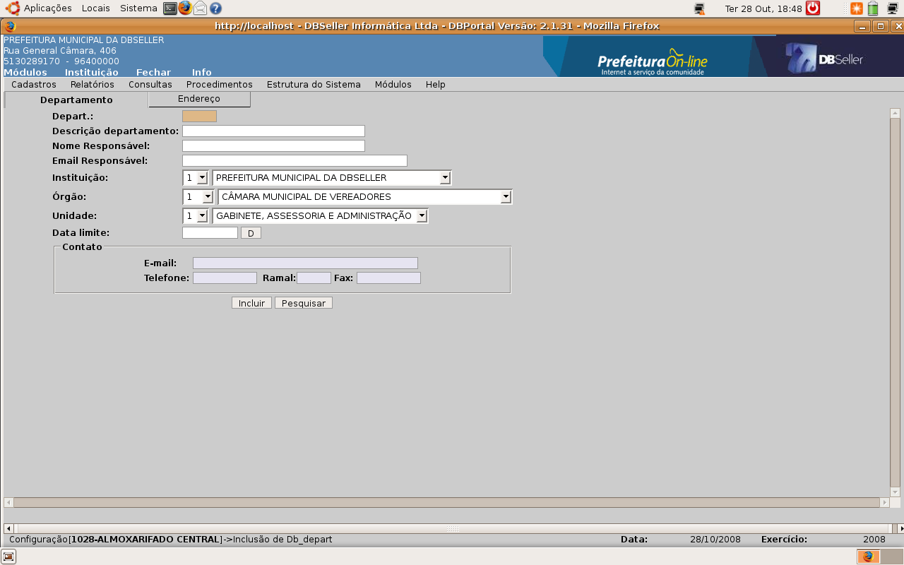
figura
003
Após clicado no botão incluir o sistema libara a aba “Endereço”, onde deverá ser cadastrado os dados referente a localização do departamento, sendo:
Código do Logradouro: Código do logradouro.
Número: Número.
Complemento: Complemento.
Bairro: Código do bairro.
Estes dados serão utilizados sempre que o sistema necessitar o endereço do departamento, como por exemplo a entrega de mercadorias e outros.
Uma tela de seleção deverá aparecer para primeiramente o usuário selecionar o departamento que deverá proceder com a alteração, este lista é padrão na maioria das alterações do sistema.
Os campos serão os mesmos da tela de inclusão, substituindo somente o botão incluir que passa para Alteração.
Uma tela de seleção deverá aparecer para primeiramente o usuário selecionar o departamento que deverá proceder com a exclusão, esta lista é padrão na maioria das exclusões do sistema.
Os campos serão os mesmos da tela de inclusão, substituindo somente o botão incluir que passa para excluir.
Esta rotina destina-se ao cadastro das estruturas de códigos. Uma estrutura de código é utilizada para criar uma árvore de identificação, como por exemplo: Plano de Contas, Estrutura de Contas do Patrimônio e outros.
A tela se divide em duas abas, sendo a primeira o estrutural e a descrição e a segunda a descrição de cada nível da estrutura incluída.
A figura 004 mostra primeira tela deste item de menu.
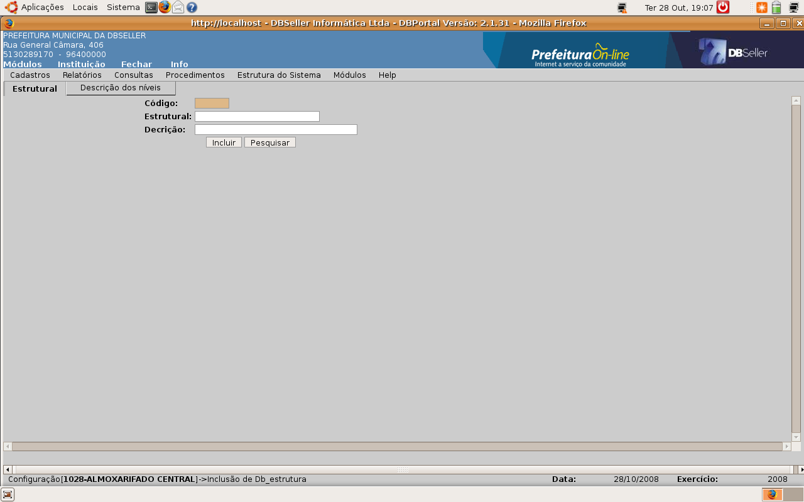
figura
004
Código: Código do campo estrutural.
Estrutural: Descrição do Estrutural. Esta descrição deverá ser preenchida, informando o níveis que serão criados para a estrutura, sendo que estes deverão ser separados por ponto (.). A cada ponto encontrado no campo estrutura o sistema gera um código e uma identificação para o mesmo, na aba de “Descrição dos Níveis”.
Descrição: Descrição da estrutura.
Uma tela de seleção deverá aparecer para primeiramente o usuário selecionar o departamento que deverá proceder com a exclusão, esta lista é padrão na maioria das exclusões do sistema.
Os campos serão os mesmos da tela de inclusão, substituindo somente o botão incluir que passa para excluir.
Nesta rotina, ao excluir uma estrutura na aba “Estrutura”, o sistema exclui também todos os dados da aba “Descrição dos Níveis”.
Esta rotina destina-se ao controle das atualizações das versões.
Esta rotina destina-se ao controle dos tipos de documentos que serão impressos e estes código são de utilização exclusiva do DBPortal.
Estes código de documentos são utilizados na rotina de manutenção dos documentos, nos procedimentos.
Código do tipo de documento: Código do tipo de documento.
Descrição do tipo de documento: Descrição do tipo de documento.
Após o preenchimento dos mesmos, o botão Incluir deverá ser pressionado e o sistema efetuará a inclusão.
Ao selecionar este item de menu, o sistema mostrará uma tela de seleção onde o usuário deverá clicar em uma das linhas e proceder com a alteração.
Após a seleção o sistema mostrará os campos como descrito na inclusão e mostrará o botão de alterar. Um vez pressionado, procederá com a Alteração.
Ao selecionar este item de menu, o sistema mostrará uma tela de seleção onde o usuário deverá clicar em uma das linhas e proceder com a exclusão.
Após a seleção o sistema mostrará os campos como descrito na inclusão e mostrará o botão de Excluir. Um vez pressionado, procederá com a exclusão.
Esta rotina destina-se ao cadastro de bancos ( Instituições Financeiras ) para utilização nos diversos módulos, principalmente Tesouraria e Contabilidade. Sua utilização é exclusiva do DBPortal.
Código do banco FEBRABAN: Código do banco atribuído pela FEBRABAN.
Descrição: Descrição do banco.
Após o preenchimento dos mesmos, o botão Incluir deverá ser pressionado e o sistema efetuará a inclusão.
Ao selecionar este item de menu, o sistema mostrará uma tela de seleção onde o usuário deverá clicar em uma das linhas e proceder com a alteração.
Após a seleção o sistema mostrará os campos como descrito na inclusão e mostrará o botão de alterar. Um vez pressionado, procederá com a Alteração.
Ao selecionar este item de menu, o sistema mostrará uma tela de seleção onde o usuário deverá clicar em uma das linhas e proceder com a exclusão.
Após a seleção o sistema mostrará os campos como descrito na inclusão e mostrará o botão de Excluir. Um vez pressionado, procederá com a exclusão.
Esta rotina destina-se ao cadastro dos tipos de Instituição, identificando os mais diversos tipos, como por exemplo: Prefeitura, Câmara, RPPs e outros. Sua utilização é exclusiva do DBPortal.
Código do tipo: Código do tipo de instituição.
Nome do tipo: Descrição do tipo.
Tipo atribuído pelo Tribunal de Contas: Código do tipo atribuído pelo tribunal de contas.
Após o preenchimento dos mesmos, o botão Incluir deverá ser pressionado e o sistema efetuará a inclusão.
Ao selecionar este item de menu, o sistema mostrará uma tela de seleção onde o usuário deverá clicar em uma das linhas e proceder com a alteração.
Após a seleção o sistema mostrará os campos como descrito na inclusão e mostrará o botão de alterar. Um vez pressionado, procederá com a Alteração.
Ao selecionar este item de menu, o sistema mostrará uma tela de seleção onde o usuário deverá clicar em uma das linhas e proceder com a exclusão.
Após a seleção o sistema mostrará os campos como descrito na inclusão e mostrará o botão de Excluir. Um vez pressionado, procederá com a exclusão.
Esta rotina destina-se ao cadastro das Instituições controladas pelo DBPortal.
A figura 005 mostra a tela de inclusão de uma instituição.
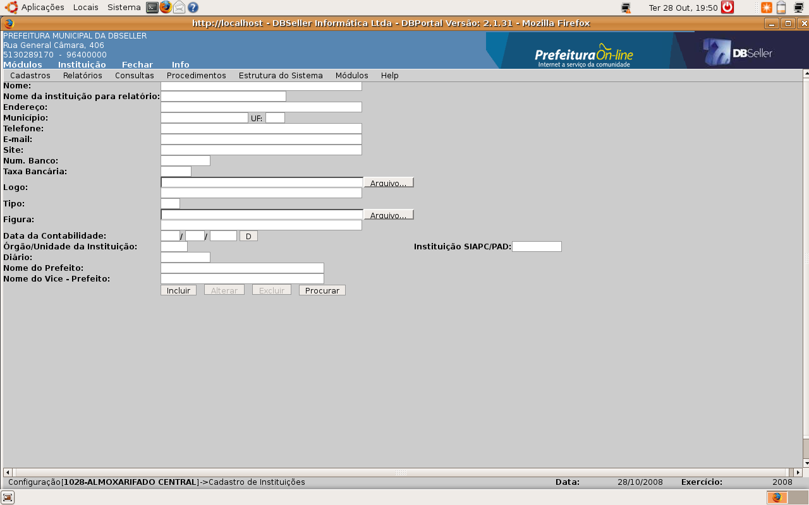
figura
005
Inclusão
Nome: Nome da instituição completo.
Nome da instituição para relatório: Nome da instituição para relatório.
Endereço: Endereço da Instituição.
Número: Numero do endereço da instituição.
Município: Município.
UF: Estado da Instituição.
Telefone: Telefone da Instituição.
Email: Email de contato da instituição.
Site: Site da instituição.
Num. Banco: Código do Banco padrão.
Taxa Bancária: Valor da taxa Bancária Padrão (Não Utilizado)
Logo:
Nome do arquivo do logo
Tipo:
Tipo do arquivo
Figura:
Nome da figura da instituição.
Data da Contabilidade:
Data de implantação da Contabilidade
Órgão/Unidade da Instituição: Órgão e Unidade
Instituição SIAPC/PAD: Órgão e Unidade centralizador
Diário: Código do Diário da Contabilidade
Nome do Prefeito: Nome do Prefeito
Nome do Vice-Prefeito: Nome do Vice Prefeito
Após o preenchimento dos mesmos, o botão Incluir deverá ser pressionado e o sistema efetuará a inclusão.
Alteração
Ao acessar este item, o botão Procurar deverá ser clicado e em seguida o sistema mostrará uma tela de seleção das instituições. Se for preenchido o nome da instituição, o sistema procurará os dados combinando o que foi digitado no nome da instituição.
Após a seleção o sistema mostrará os campos como descrito na inclusão e habilitará o botão de alterar. Um vez pressionado, procederá com a Alteração.
Exclusão
Ao acessar este item, o botão Procurar deverá ser clicado e em seguida o sistema mostrará uma tela de seleção das instituições. Se for preenchido o nome da instituição, o sistema procurará os dados combinando o que foi digitado no nome da instituição.
Após a seleção o sistema mostrará os campos como descrito na inclusão e habilitará o botão de excluir. Um vez pressionado, procederá com a Exclusão.
Esta rotina destina-se ao cadastro dos tipos de formatação controladas pelo DBPortal.
A figura 006 mostra a tela de inclusão de uma formatação.
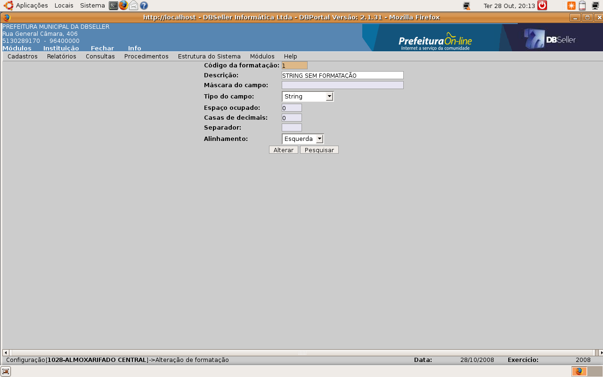
Código da formatação: Código da formatação.
Descrição: Descrição da formatação.
Máscara do campo: Máscara da formatação.
Tipo do campo: String, Inteiro, Decimal, Data, Hora, CEP, CGC / CPF, Executa eval, String livre
Espaço ocupado: Tamanho do campo
Casas de decimais: Número de Casas Decimais
Separador: Tipo de Separador
Alinhamento: Tipo de Alinhamento
Após o preenchimento dos campos, o botão Incluir deverá ser pressionado e o sistema efetuará a inclusão.
Ao selecionar este item de menu, o sistema mostrará uma tela de seleção onde o usuário deverá clicar em uma das linhas e proceder com a alteração.
Após a seleção o sistema mostrará os campos como descrito na inclusão e mostrará o botão de alterar. Um vez pressionado, procederá com a Alteração.
Ao selecionar este item de menu, o sistema mostrará uma tela de seleção onde o usuário deverá clicar em uma das linhas e proceder com a exclusão.
Após a seleção o sistema mostrará os campos como descrito na inclusão e mostrará o botão de Excluir. Um vez pressionado, procederá com a exclusão.
Considera-se usuário interno, o usuário que terá acesso ao DBPortal e portanto receberá permissões de acesso e outros.
A tela dos usuários internos exibe quatro abas, sendo “Usuários”, “Departamento”, “Liberar Perfis” e “Permissão de Empenho”.
Na aba “Usuários”, os campos abaixo deverão ser preenchidos.
Código Usuário: Código do Usuário.
Numcgm: Código do CGM – Cadastro Geral do Município. Clicando sobre a descrição (link), o sistema trás a uma tela com a lista de todos os nomes cadastrados no sistema.
Login do usuário: Login do usuário. O sistema sugere neste caso o login do usuário a ser incluído, colocando o primeiro nome como padrão. Sugere-se cadastrar os logins dos usuários com o primeiro nome, separado com ponto (.) e o sobrenome para possibilitar um número maior de logins e a identificação mais adequada.
Senha: Senha do Usuário.
Verifica senha: Confirmação da Senha do Usuário.
Usuário Ativo: Situação do Usuário.
Administrador: Usuário Administrador
Email: Email do usuário.
Instituição: Instituição que o Usuário terá acesso. A instituição que o usuário esta acessando será selecionada automaticamente.
Uma peculiaridade deste cadastro é a seleção das instituições e neste caso, uma ou mais instituições deverão ser cadastradas para um usuário. Estas instituições serão mostradas na tela de seleção das instituição ao acessar o sistema.
O usuário administrador será o usuário que terá acesso a maioria dos itens de menus, sem necessidade de liberar permissão para o mesmo. Este usuário poderá acessar o sistema mesmo que o mesmo esteja com inativo para os usuários.
Após o preenchimento destes campos e clicar no botão Incluir, o sistema libera as demais abas.
Na aba “Departamento”, poderá ser selecionado um ou mais departamentos para o usuário.
Na aba “Liberar Perfis” poderá também ser liberados um ou mais perfis para o usuário em questão ou também não efetuar nenhuma alteração.
Na aba “Permissões de Empenho” o sistema possibilita a atualização das permissões dos empenhos demonstrado no help desta opção.
Estas abas tem por objetivo a facilidade de manutenção, uma vez que não necessita de permissão, nem tão pouco o acesso as várias rotinas.
Os campos destas abas estão descritos no help de cada um dos itens de menu.
A figura 006 mostra a tela principal dos usuário internos e as abas.
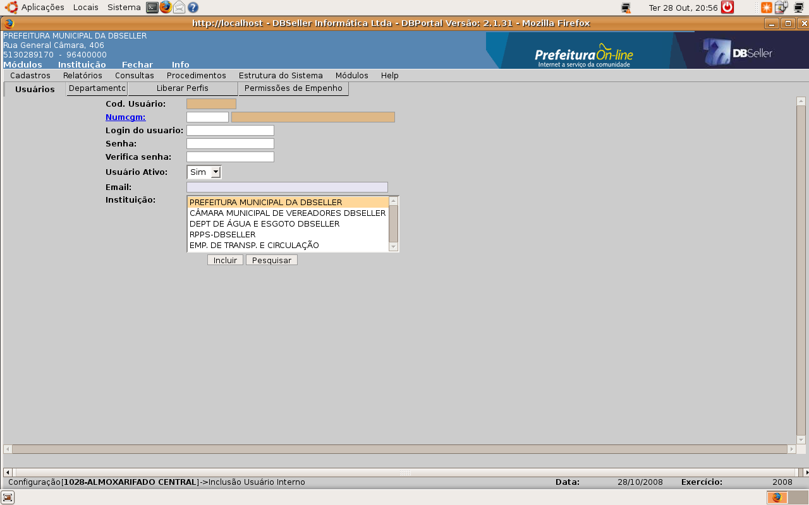
Figura
006
Ao acessar a tela de alteração, uma lista de usuários internos será exibida e ao selecionar um dos usuários do sistema mostrará os dados como descrito na opção de inclusão.
Na alteração, após a seleção de um usuário o sistema libera as abas e coloca disponível o botão alterar. Também poderá ser alterado os dados de qualquer uma das abas, clicando sobre a descrição da aba e em seguida o sistema possibilitará a manipulação dos dados da mesma.
O campo Senha e Verifica Senha não deverão ser preenchidos, assim o sistema não modificará o seu conteúdo, pois nos procedimentos o sistema tem uma opção específica para esta ação.
Sugere-se que quando um usuário seja desligado da instituição, o mesmo deverá ser colocado como inativo e sua senha alterada para outra qualquer.
Considera-se usuário externo, o usuário que terá acesso ao DBPref (Sistema Acesso Contribuinte) e portanto não receberá permissões de acesso e outros.
A tela dos usuários externos exibe os seguintes campos.
Código do Usuário: Campo código do usuário
Login: Nome do usuário selecionado do Cadastro Geral
Login do Usuário: Login do usuário gerado automaticamente pelo sistema
Senha: Senha do Usuário Externo
Verifica senha: Confirmação da Senha do Usuário Externo
Usuário Ativo: Situação do usuário
Email: Email de contado do usuário
Criar senha aleatória: Esta opção selecionada processará uma senha aleatória e enviará para o email do usuário automaticamente
Após o preenchimento destes campos e clicar no botão Incluir, o sistema processa a inclusão e se marcado o campo Criar senha aleatoória gera a mesma e envia ao usuário cadastrado.
Para os usuários externos não é necessário a seleção de instituição, pois o sistema de acesso dos contribuintes faz a seleção da instituição automaticamente.
A figura 007 mostra a tela principal dos usuário externos.
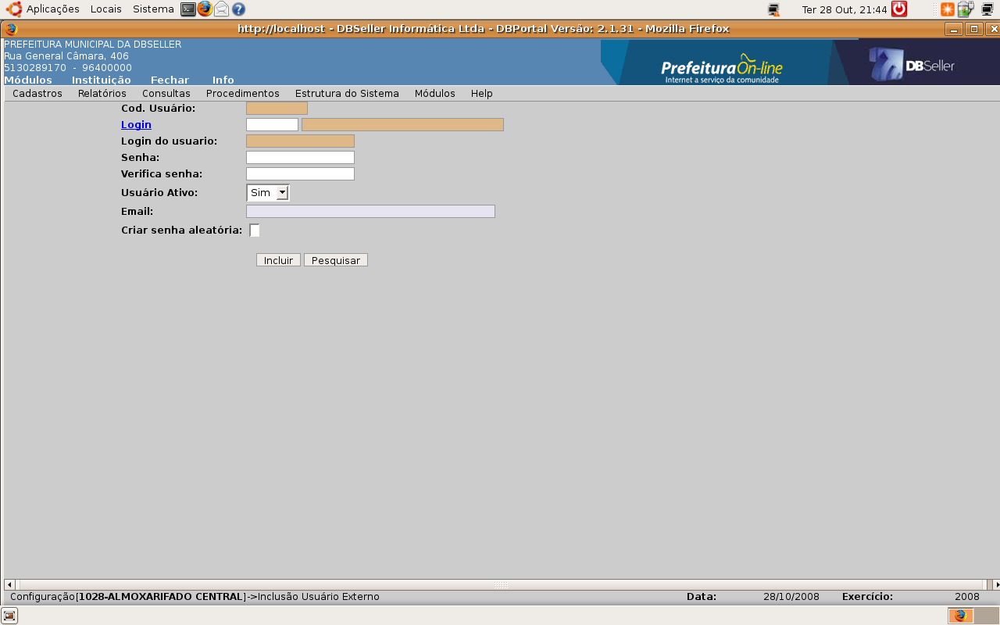
figura
007
Ao acessar a tela de alteração, uma lista de usuários externos será exibida e ao selecionar um dos usuários do sistema mostrará os dados como descrito na opção de inclusão.
Um Perfil é um identificador, um grupo onde pode-se colocar várias permissões e depois adicionar à vários usuários internos para facilitar o controle das permissões. Esta opção possibilita o controle de ativação e desativação dos itens de menu.
Um Perfil é basicamente um usuário, mas não possibilita o acesso ao sistema e outros exclusivos de usuário interno.
A tela de Perfis exibe os seguintes campos.
Código do Perfil: Código do Perfil
Nome do Perfil: Nome do Perfil, normalmente identificado com o nome da instituição, seguido da descrição resumida que possa identifica-lo.
Login: Login de identificação do perfil
Instituição: Nome da Instituição, poderá ser selecionado mais de uma instituição.
Após o preenchimento destes campos e clicar no botão Incluir, o sistema processa a inclusão do perfil.
As permissões de menus que este perfil receberá deverá ser incluída, utilizando-se a rotina de menu em procedimentos.
A figura 008 mostra a tela principal dos Perfis.
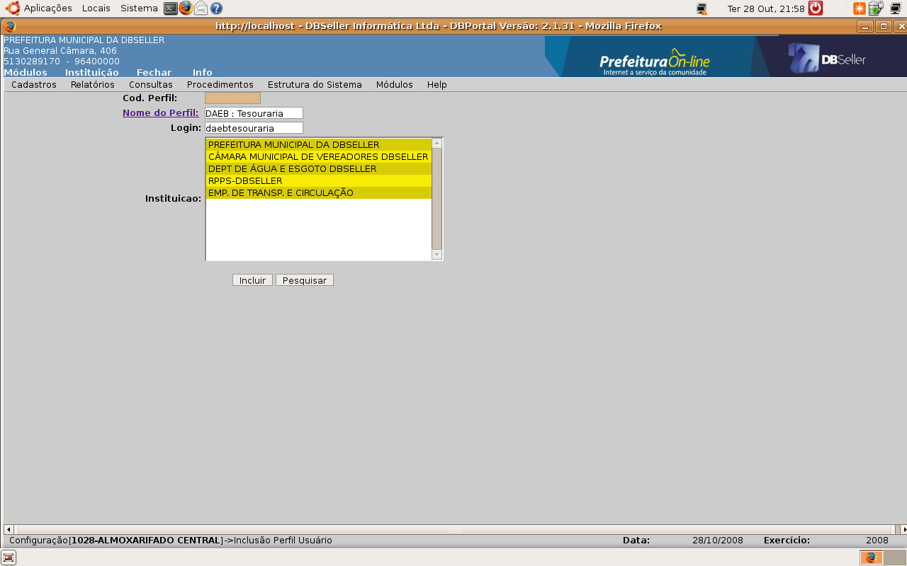
figura
007
Ao acessar a tela de alteração, uma lista de Perfis será exibida e ao selecionar um dos Perfis, o sistema mostrará os dados como descrito na opção de inclusão, substituindo o botão Inclusão por Alteração.
Ao acessar este relatório o sistema mostra a tela abaixo, conforme figura 009.
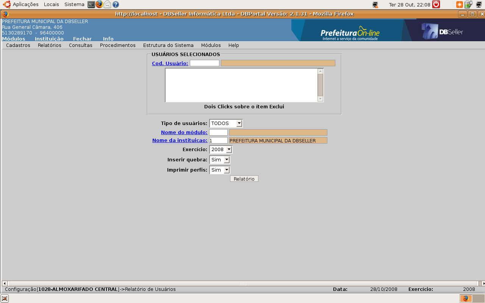
Figura
009
O primeiro campo a ser selecionado é o usuário, que poderá ser adicionado uma lista de usuário, clicando no campo Código do Usuário. Após aparecerá uma lista de usuários e ao clicar em um da lista o sistema adicionará automaticamente no objeto em questão. Para retirar um usuário já selecionado, deverá ser clicado duas vezes no nome do mesmo. Caso não selecionado nenhum dos usuários o sistema entenderá que serão processados todos os usuários.
No campo Tipo de Usuário poderá ser selecionado os Ativos, Inativos ou Todos, que é o padrão.
No campo nome do módulo, poderá ser selecionado um determinado módulos. Se deixado em brando será listado todos os usuários. Ao clicar no Link “Nome do Módulo” o sistema mostra uma lista dos módulos para seleção.
Nome campo “Nome da Instituição” poderá ser selecionado uma instituição para compor o relatório. Ao clicar no Link “Nome da Instituição” o sistema mostra uma lista das instituições para seleção.
No campo exercício deverá ser selecionado o exercício das permissões.
Poderá ser selecionado o campo Inserir Quebra para listar as opções da mesma.
Poderá também ser selecionado a opção de imprimir ou não os Perfis.
Ao processar este relatório, sem seleção dos usuários, o sistema pergunta se gostaria de prosseguir, pois neste caso poderá haver uma tempos maior de processamento.
A figura 10 mostra um exemplo de um reltório.
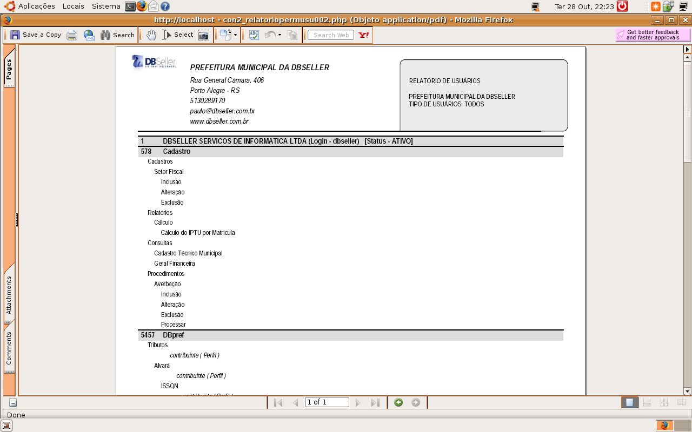
Figura 010
Ao acessar este relatório o sistema mostra a tela abaixo, conforme figura 011.
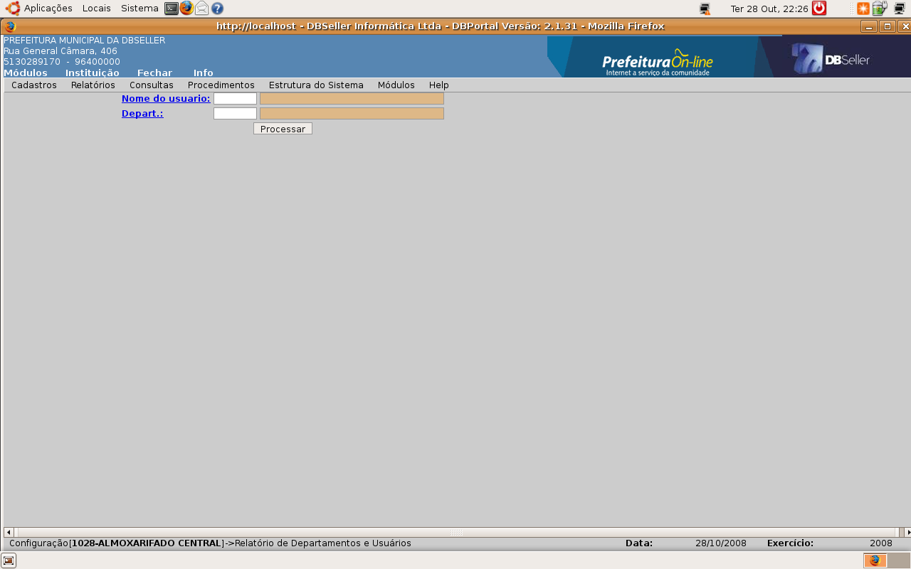
Figura 011
O primeiro campo destina ao usuário, clicando no link aparecerá uma lista dos usuários e digitando o código do mesmo, o nome do usuário será apresentado.
O segundo campo destina-se ao código do departamento, clicando no link o sistema mostra um lista dos departamentos.
Este relatório lista a combinação dos dois campos, lista usuários e seus departamentos ou departamentos e seus usuários. Se selecionado um usuário e um departamento o sistema gerará uma lista com esta conbinação.
A figura 012 mostra um exemplo deste relatório.
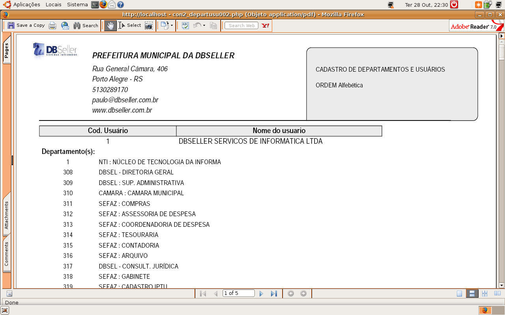
Figura 012
Ao acessar este relatório o sistema mostra a tela abaixo, conforme figura 013.
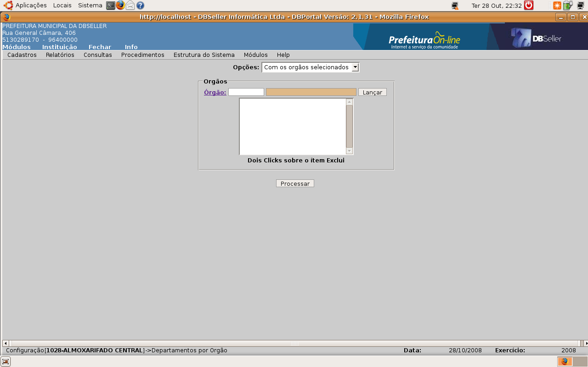
figura
013
O primeiro campo destina a seleção de como o relatório vai se comportar, utilizando os departamento selecionados como filtro ou não imprimindo os selecionados.
O segundo campo destina-se ao código dos órgãos, podendo selecionar mais de um órgão no mesmo relatório.
Este relatório lista todos os departamentos, por ordem dos órgãos e agrupados pelos mesmos.
A figura 014 mostra um exemplo deste relatório.
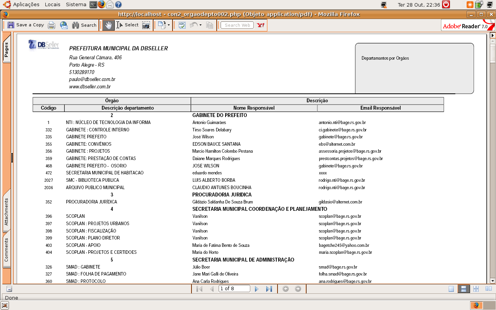
Figura 014
Ao acessar este relatório o sistema mostra a tela abaixo, conforme figura 015.
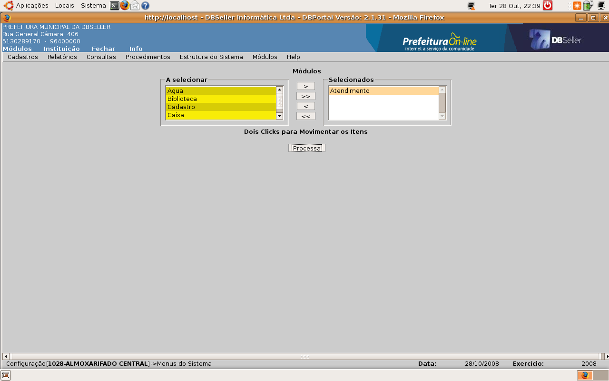
figura
015
Na tela, no objeto da esquerda, o sistema lista todos os módulos do sistema e ao clicar duas vezes em um dos itens ou utilizar as setas no centro os mesmos são selecionados na tela da direita. Clicando sobre o item na tela direita duas vezes, o sistema retira o mesmo da seleção.
Após selecionado os módulos desejados o sistema processa a geração do relatório com todos os itens de menus.
A figura 016 mostra um exemplo deste relatório.
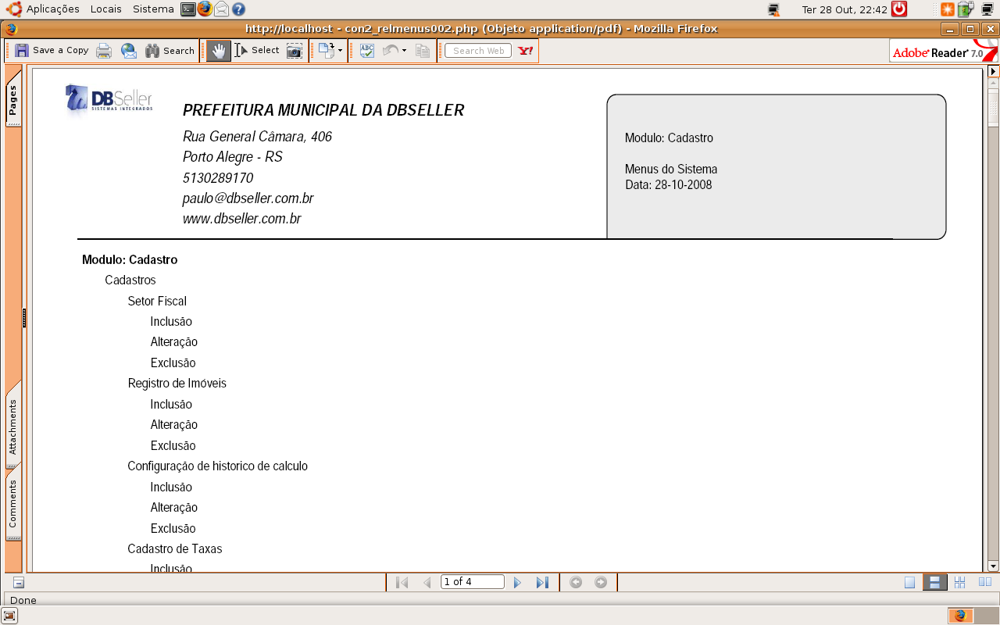
Figura 016
Ao acessar esta consulta o sistema lista todos os usuários ativos no momento, esta consulta tem um tempo padrão de atualização de 5 segundos. Este tempo poderá ser alterado, digitando-se o novo tempo no campo “Período de Atualização:” e clicando no botão Atualizar.
A figura 017 mostra esta tela.
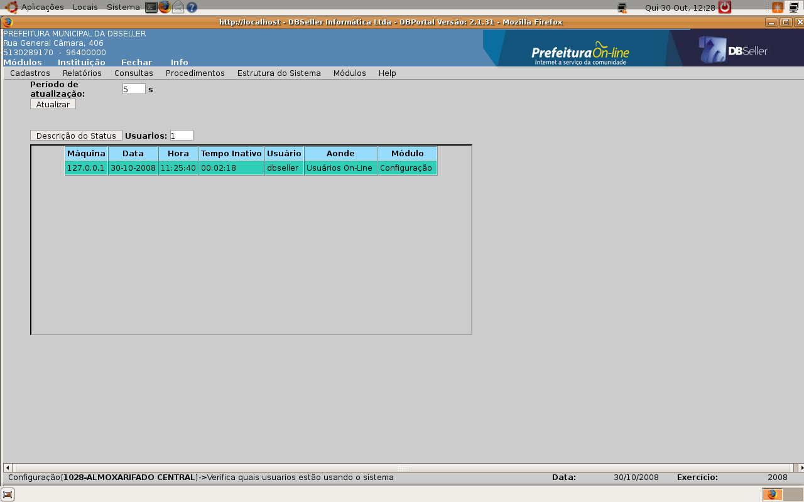
figura
017
Na tela interna, mostra as principais informações, como IP da Máquina, Data, Hora, Tempo Inativo, Usuário, Aonde, Módulo. Estas informações ficam guardadas e podem ser acessadas pela consulta de acesso ao sistema.
Ao acessar esta consulta o sistema solicita que seja selecionado um módulo, listando após as tabelas do mesmo, que deseja-se verificar as alterações.
Somente após a seleção da tabela é que o sistema mostra o botão de pesquisa e também coloca a lista de usuários cadastrados. A baixo da descrição de “Chave de Acesso:” lista as chaves de pesquisas da tabela selecionada, pois estas, são necessárias para gerar filtros na pesquisa.
No campo Data: poderá ser informada a data que deseja-se pesquisar, sendo que o sistema mostrará os dados da data informada até a presente data.
A figura 018 mostra esta tela, onde já esta selecionado um módulo e ma tabela.
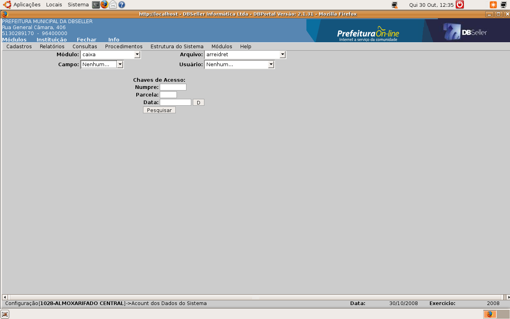
figura
018
Após a pesquisa, o sistema mostra a lista dos dados da tabela acessada. Mostra as Inclusões, Alterações e Exclusões efetuadas na mesma, mostra o conteúdo anterior ao movimento dos dados e o conteúdo atual, bem como, nome do usuário, data e hora.
Observação: Quanto maior o número de usuários acessando o sistema, maior o tempo de resposta desta consulta, portanto, pede-se que, consultas em tabelas de grande acesso sejam executadas fora do horário normal de expediente.
Esta consulta destina-se a verificação das permissões de acesso aos itens de menu. O sistema mostra quem são os usuários ou perfis que possuem acesso a um item de menu em específico.
Ao acessar esta rotina, o sistema mostrará a lista de todos os módulos liberados e selecionando um deles será sobreposto uma tela com a árvore dos menus que compõem o mesmo. Para cada um dos itens, o sistema mostra um botão com o número do mesmo e ao clicar sobre ele será sobreposto outra tela com os usuários e os perfis que tem acesso ao mesmo.
A sobreposição das telas de consulta são geradas no intuito de facilitar outra consulta, uma vez que as telas ficam com o conteúdo que as gerou. Basta clicar no ícone de fechar para podermos visualizar a tela anterior.
A figura 019 mostra a segunda tela, árvore dos menus.
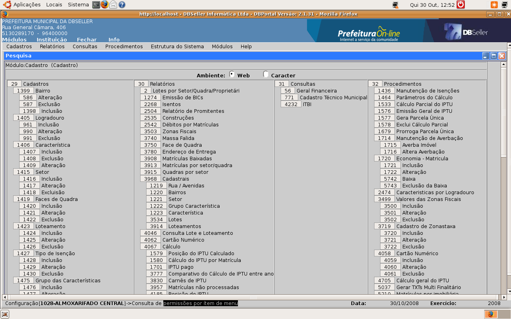
figura
019
Esta rotina destina a organização dos itens de menus cadastrados no sistema. Primeiramente, o sistema lista todos os módulos cadastrados e após a seleção, mostra uma tela, conforme figura 020 abaixo:
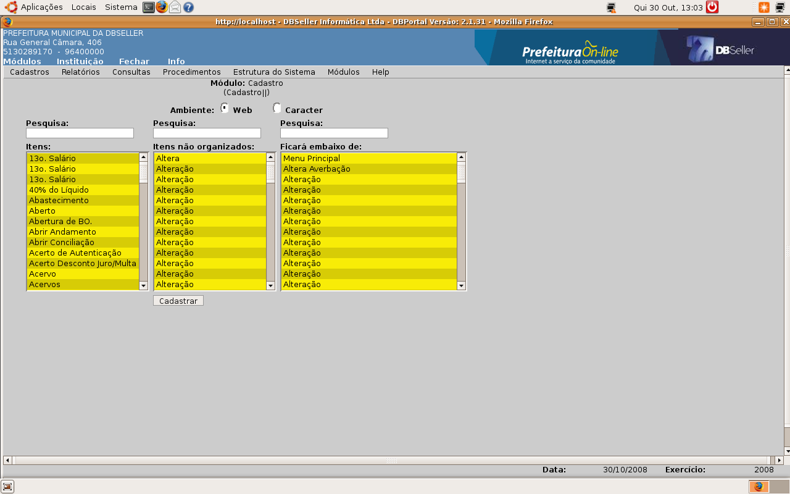
Figura
020
Primeiramente poderá ser selecionado qual o ambiente, normalmente Web e em seguida há três telas identificadas como:
Itens: Esta tela trás todos os itens cadastrados no sistema que não foram cadastrados como módulo, pois um mesmo item poderá estar cadastrado em mais de um módulo, uma das facilidades do sistema.
Itens não Organizados: Nesta tela aparecerá todos os itens cadastrados no sistema que ainda não foram adicionados a nenhum módulos, justamente para facilitar a busca dos mesmos na adição de um novo item.
Ficará em Baixo de: Esta tela exibe todos os itens de menus que estão adicionados no módulo e indica qual o item pai que será adicionado o item em questão para montar a árvore dos menus.
Para cada tela possui um campo texto com identificação de “Pesquisa:” para podermos procurar os itens que desejamos cadastrar.
Portanto, para incluirmos um menu devemos selecionar um item na tela “Itens” ou um item na tela “Itens não Organizados” e em seguida selecionar que o item que será o seu pai, qual o item que ficará imediatamente acima do item em questão. Assim formaremos uma árvore dos itens de menu.
Para incluir um novo módulo, devemos então primeiramente adicionar os itens Cadastro, Relatório, Consulta e Procedimentos da tela Itens e depois para cada um destes adicionar os vários níveis de menus que desejamos.
A figura 019 acima mostra um exemplo de uma árvore de menus gerada nesta rotina.
Esta opção processa a exclusão de um item de menu, ou uma árvore de menus, devendo primeiramente, assim como na inclusão, selecionar o módulo que desejamos excluir um item. Após esta seleção o sistema mostra a árvore de menu do módulo e colocar em cada um dos itens um botão tipo checkbox.
Em marcando um ou mais dos itens de menu e clicando no botão Excluir o sistema processa a exclusão, liberando este item de menu para ser adicionado em outro módulo ou até mesmo excluído.
Deve-se tomar o cuidado de não estar excluindo um item de menu que esta em uso pelos usuários, devendo-se pesquisar a sua utilização na conlta de permissões de acesso..
A figura 021 mostra a tela de exclusão:
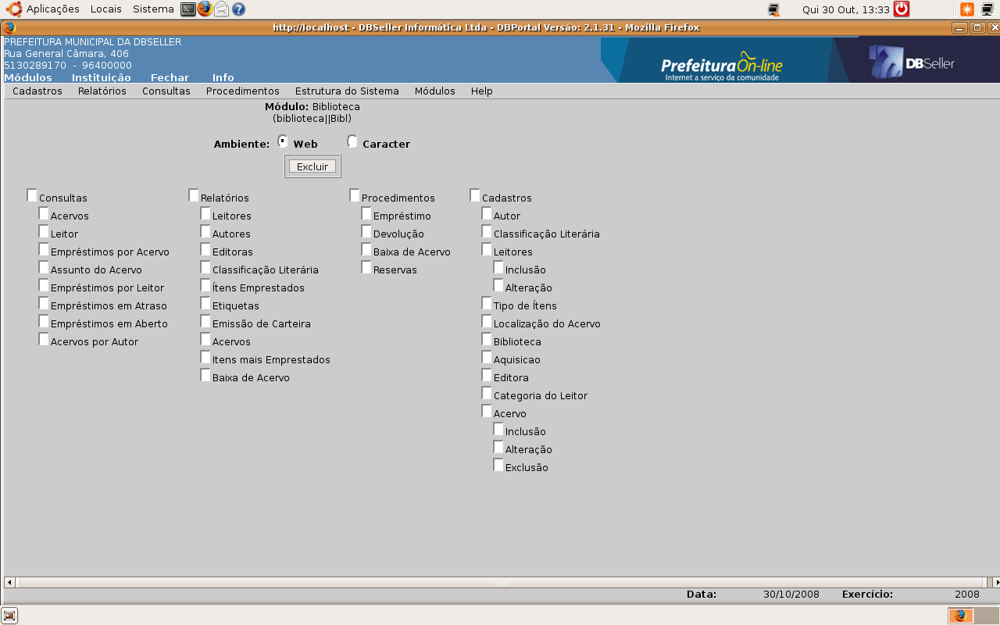
Figura 021
Este item destina-se a ordenação de um determinado item de menu, pois quando da sua inclusão a ordem não ficou correta.
A acessar esta rotina, o sistema mostra a tela com todos os módulos para seleção e ao selecioná-lo, o sistema mostra a árvore de menu como na figura 019. Deve-se sempre selecionar o item pai de um menu, o item deslocado para a esquerda imediatamente acima dos itens que se deseja ordenar.
Caso seja selecionado um item que não possui menu abaixo, o sistema mostrará uma mensagem e o botão de retornar.
Após a seleção do menu o sistema mostra uma tela com os itens do menu que deseja-se ordenar e as setas com indicação para cima e para baixo. Seleciona-se então um item e clica-se na seta desejada, ordenando-se assim o menu.
Ao termino da ordenação, clica-se no botão Atualizar e em seguida no botão retornar para podermos alterar outro menu.
A figura 022 mostra a tela final da ordenação de menus.
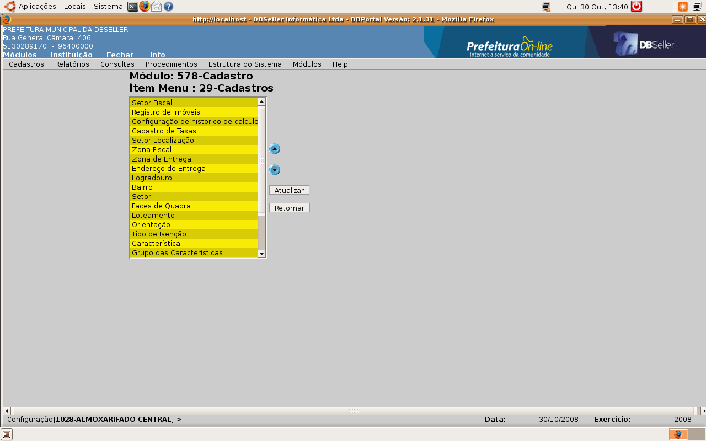
figura
022
Esta opção destina-se a liberação de módulos para um determinado usuário. Esta liberação de módulo é como se o usuário fosse o responsável pela administração do módulo, é ele quem vai dar permissões de acesso para outros usuários a este modulo. Na opção de menu “Libera Permissão de Menu”, explicado abaixo, somente aparecerá módulos para liberar permissão poderá liberar permissão os módulos liberados nesta rotina.
Assim como na maioria das rotinas envolvendo liberação de permissão, a primeira tela será a lista dos módulos e ao selecioná-lo mostra a tela de liberação.
A figura 023 mostra a tela de liberação dos módulos.
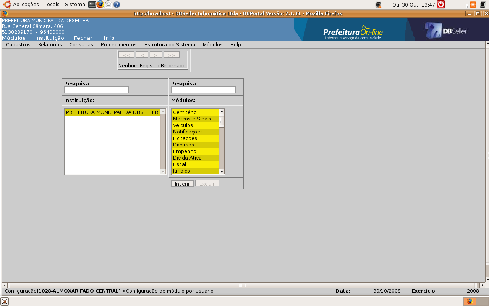
figura
023
Existem três quadros nesta tela, o primeiro mostra a lista dos módulos já liberados, o segundo quadro mostra as instituições e o terceiro, os módulos.
Para liberar um módulo, é necessário selecionar uma instituição e em seguida um módulo, após clicar no botão inserir. Será exibido na tela superior o módulo selecionado.
Para retirar um módulo, deve-se selecionar um módulo na tela superior, onde com isto será liberado o botão Excluir que se pressionado executará a exclusão.
Este procedimento destina-se a liberação de menus no sistema para um determinado item de menu ou um perfil e também para um exercício.
Para usuários cadastrados no sistema que possuem o campo “Administrador” marcado, a primeira tela será a lista das instituições que ele poderá dar permissão. Para outros usuários, esta tela será suprimida, não aparecerá e será exibida a tela com os usuários e exercício, marcando como instituição padrão a instituição que esta logado.
Após a seleção da instituição, no caso de usuário administrador, o sistema mostrará a lista dos usuários e perfis cadastrados, mostrando ao lado o exercício atual, podendo assim, selecionar um usuário ou perfil e um exercício.
Pode-se ainda selecionar um usuário ou perfil digitando-se o nome do mesmo no texto Pesquisar, acima da lista dos usuários.
A figura 024 mostra esta tela.
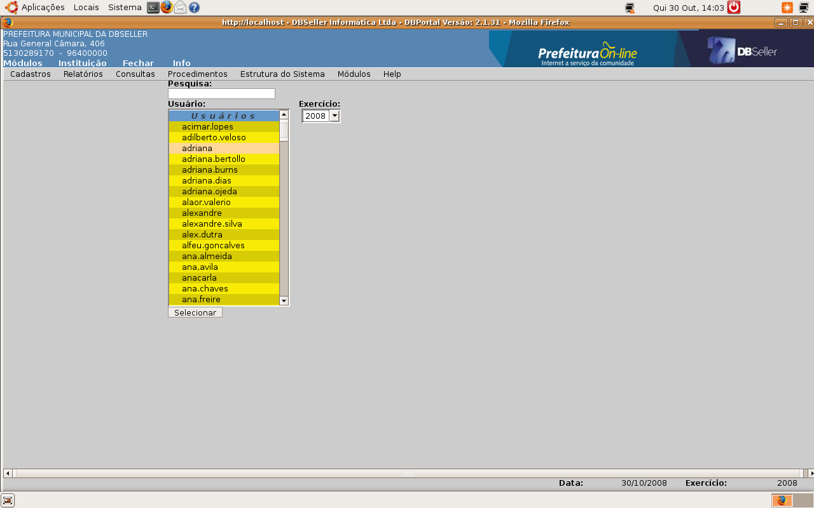
Figura
024
Após a seleção, basta o usuário clicar no botão Selecionar que o sistema mostrará a tela todos os módulos disponíveis para liberar permissão e todos os perfis disponíveis para a instituição em questão.
Assim como foi dito no item anterior, Libera Módulos por Usuário, somente aparecerá nesta tela os módulos que foram liberados para o usuário que esta acessando esta opção, ou todos os módulos se o mesmo estiver cadastrado com Administrador do Sistema.
A Figura 025 mostra a tela.
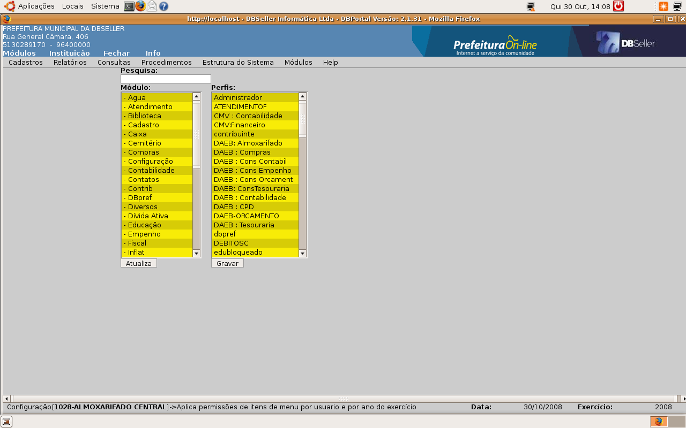
Figura
025
Para esta tela existem suas ações, uma é selecionar um módulo e em seguida clicar no botão Atualizar e outra, selecionar o Perfil e clicar no botão Gravar.
Primeiramente se selecionado um perfil e clicado no botão Gravar o sistema atualizará as permissões do usuários selecionado na tela anterior e voltará a exibir esta tela, marcando o perfil como selecionado.
Caso deseja-se marcar mais de um perfil, deve-se pressionar a tecla CTRL e clicar nos perfis desejados e em seguida clicar em Gravar. Este procedimento fará com que todos os perfis sejam atualizados nas permissões do usuário.
Para liberar somente um ou mais itens de menu, deve-se selecionar módulo e em seguida clicar no botão Atualizar. O sistema mostrará uma tela com a árvore dos menus do módulo selecionado, como mostra a figura 026.
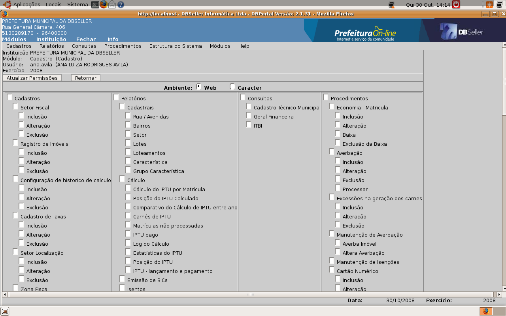
figura
026
Esta tela colocar em cada um dos itens de menu um botão tipo checkbox que identifica se a permissão esta ativa para o usuário. Permissões de perfil não aparecem como ativa.
Após a seleção de todas as opções, o usuário deverá clicar no botão Atualiza Permissões que o sistema irá registrar todas as permissões marcadas ou então, clicar no botão Retornar para voltar a tela anterior de seleção de módulo.
Esta opção destina-se a liberação de permissões por perfil, facilitando o trabalho de liberar um perfil para vários usuários ao mesmo tempo.
A primeira tela a ser exibida será a tela de escolha das instituições se o usuários for administrador, senão, esta tela será suprimida assumindo a instituição já selecionada.
Em seguida será exibido a tela com a lista dos perfis e com o exercício, basicamente como na Figura 024 e se selecionado um Perfil e um Exercício e pressionado o botão Selecionar o sistema trará a tela se seleção dos usuários que passarão a ter as permissões do perfil escolhido.
A figura 027 mostra esta tela.
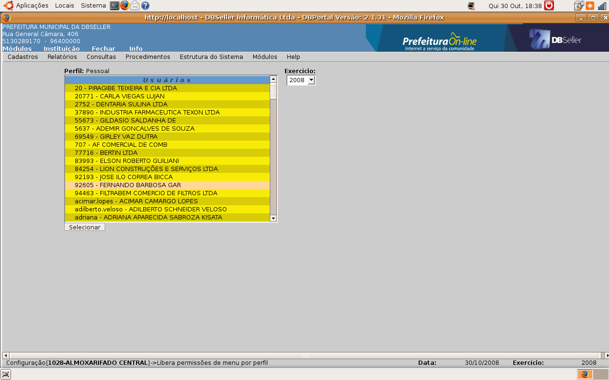
figura
027
Nesta tela, o sistema mostra a lista dos usuários que receberão as permissões do Perfil mostrado acima da lista e também o Execício que poderá ser alterado.
Neste momento, poderá o usuário selecionar um ou mais logins que receberão as permissões, sendo que para isto, deve-se pressionar o CTRL e em seguida clicar sobre os logins desejados.
Após a seleção, basta clicar no botão Selecionar localizado logo abaixo da lista de logins, efetuando assim as alterações necessárias nas permissões dos mesmos. O sistema retornará automaticamente para a primeira tela de acesso após este conformação.
As permissões de empenho destinam-se aos filtros que o sistema fará no momento da seleção de dotações orçamentárias e relatórios das mesmas quando se fizer necessário.
Este filtro é bastante utilizado quando os usuários vão efetuar reservas de saldo orçamentário e caso as permissões não se enquadram nas dotações desejadas o sistema não executará o procedimento de reserva.
A liberação poderá ser criada, utilizando-se como chave de acesso o login do usuário ou até mesmo o departamento. Uma liberação efetuadas para o login será processada sempre que solicitado dotação orçamentária. Após a seleção do login, na primeira tela, o sistema trás a segunda tela com todos os dados necessários para a inclusão.
Na figura 028 mostramos esta tela.
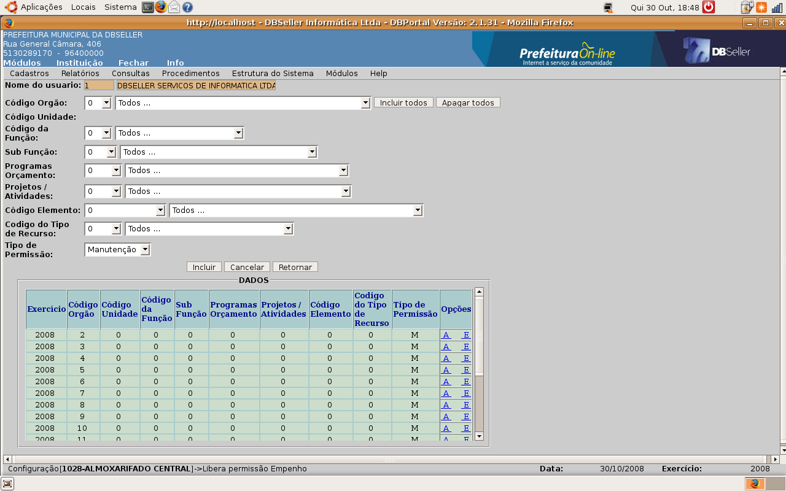
figura
028
Esta tela é composta pela estrutura da dotação orçamentária (veja o módulo orçamento para compreensão da estrutura orçamentária) e poderá o usuário selecionar qualquer um dos campos da tela e incluir para o login selecionado e exibido acima, na primeira linha da tela.
Na ordem dos campos, Órgão, Unidade, Função, Sub-Função, etc. , os filtros vão sendo mostrados conforme o orçamento, como pro exemplo: se selecionado uma secretária (Órgão) o sistema mostrará na linha das unidades somente as unidades da secretaria selecionada, outro exemplo: se selecionado um programas, o sistema mostrará somente as atividades deste programa, os elementos que tem neste programa, os recursos destes programas e assim por toda a tela.
Após a seleção como descrito acima, o sistema libera o botão Incluir que poderá ser pressionado para inclusão dos dados selecionados acima e mostrará na tela inferior, conforme Figura 028 a lista do que já foi incluído.
O botão cancelar, reinicia a tela do sistema e trás todos os campos com valor zero, para podermos gerar um novo filtro, quando necessário.
O botão Retornar faz com que o sistema vá para a primeira tela, tela de seleção do usuário ou departamento.
Já, na linha do Órgão, existem dois botões auxiliares que tem por objetivo facilitar o manuseio dos dados desta rotina, por exemplo: o botão Incluir Todos, processa a inclusão de todos os Órgãos para o usuário selecionado na primeira tela, listando na tela inferior todos os cadastros efetuados; o botão Apagar todos, executa a exclusão de todas as permissões criadas para o usuário.
Na linha “Tipo de Permissão” poderá ser escolhida duas opções, Manutenção e Consulta. Manutenção serve para aqueles usuários que podem reservar valores orçamentários e comprar utilizando as dotações disponíveis e a opção de Consulta, mostrará somente os dados para estas permissões. Esta opção Consulta é bastante utilizada na consulta dos empenhos, pois usuários podem ver os dados, mas não podem reservar valores nestas dotações.
Normalmente estas permissões somente são processadas no início do exercício, quando da liberação do orçamento ou também na troca de algum usuário do sistema.
Cabe salientar que esta rotina cria as permissões para o exercício selecionado no momento do acesso ao módulo, portanto se desejares liberar permissão para mais de um exercício, deverá ir até a tela de inicialização dos módulos e selecionar o exercício.
Na tela inferior, pode-se ao clicar no link A ou E proceder com a escolha de alteração ou exclusão, o sistema trará os dados e mostrará o botão conforme a escolha. Caso o usuário não desejares mais executar o procedimento criado por esta ação, bastará clicar no botão Cancelar para o mesmo abrir a tela como inclusão.
Esta rotina permite ao usuário duplicar permissões de acesso para exercício futuros ou anteriores de uma forma mais fácil e dinâmica. As permissões a serem processadas serão sempre as do exercício corrente e o exercício selecionado será o que vai receber as mesmas.
O usuário então deverá digitar o exercício ao qual quer copiar as permissões, selecionar os usuários que deseja processar e em seguida clicar no botão Processa.
A figura 029 mostra esta tela.
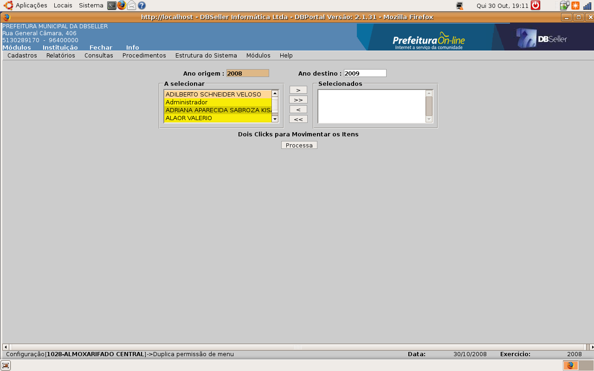
Figura
029
Poderá o usuário selecionar todos os logins, utilizando-se das setas entra as janelas, como indica a figura “>”, leva o login selecionado para tela da direita e a figura “>>“ leva todos os logins. Podemos também selecionar mais de um Login, pressionando-se o CTRL simultaneamente com os clicks nos logins, após utilizando a figura “>”.
Assim como da janela da esquerda para a direita, para ser utilizado da direita para a esquerda, invertendo-se as figuras no click.
As permissões que os usuários já tiverem no exercício destino não serão removidas e sim serão adicionadas as novas permissões, sem prejuizo do que já estava liberado. Para verificação das permissões do usuários, consulte a opção de consulta permissões.
Esta rotina, como o próprio nome já sugere, serve para alterar a senha do usuário ativo no momento do acesso a este item. O usuário deverá fornecer a senha atual e fornecer a nova senha e confirmação de nova senha.
Isto é posto para evitar que outros usuários, se aproveitando da sessão aberta no momento, possam estar modificando as senha sem a permissão do usuário logado no momento.
Aconselha-se a troca rotineira da senha para segurança e confiabilidade dos acessos ao sistema. Senhas são alvos de muita curiosidade, portanto coloque uma senha sempre diferente, não utilizando seu próprio nome, data de nascimento e números sequenciais. Combine números e letras para sua maior segurança.
Esta rotina destina-se a execução de procedimentos com data anterior a data do sistema. Quando um usuário acessa esta rotina, o sistema retorna a data e registra todos os dados com a data que esta selecionada.
Este procedimento é bastante útil quando um usuário, no final de um exercício necessita fazer lançamentos e movimentos no exercício anterior.
A figura 030 trás esta tela.
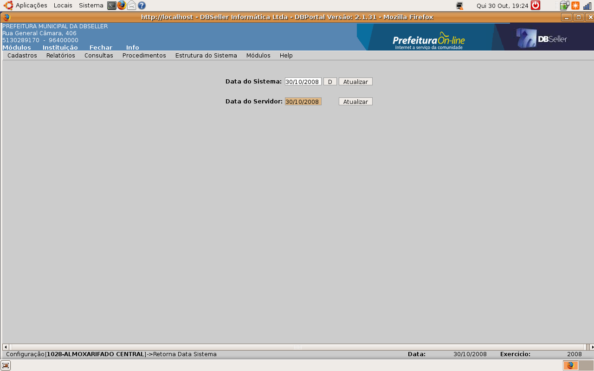
Figura
030
Nesta tela temos duas linhas, uma com a data do Sistema e outra com a data do servidor. Na linha com a data do sistema, mostramos a data que esta selecionada no momento que estamos acessando esta rotina e na linha data do servidor a data do servidor de banco de dados que estamos acessando.
Ao lado de cada linha, temos o botão Atualizar que utilizará a data mostrada ao lado e processará como data do sistema. O sistema guarda a data digitada e utiliza-a para todas as rotinas envolvendo data que serão processadas.
Caso o usuário modifique a data na linha data do servidor, saia do sistema e retorne novamente, o sistema vai encaminhá-lo para esta tela. Isto acontece porque o sistema entende que se ele estava trabalhando em uma data ele vai ficar com esta, facilitando com isto, principalmente nos encerramentos dos exercício contábeis, onde este procedimento é bastante utilizado.
Se o usuário desejar retornar a data atual do sistema, basta ele entrar neste item de menu e clicar no botão Atualizar da segunda linha. O sistema com isto colocará ele na data atual e não mais o solicitará que atualize a data.
Importante: Esta opção é por usuário acessado, portanto um usuário poderá estar acessando o sistema em uma data e outro em outra data, não interferindo entre si.
Esta rotina permite a seleção de mais de um departamento para um usuário. Neste caso basta selecionar um usuário que o sistema mostrará na janela da direita todos os departamentos cadastro e poderá ser modificado o departamento ou incluído novos departamentos.
Lembre-se que neste caso, deverá ser pressionado o CTRL e simultaneamente clicado nos departamentos e após clicar no botão Incluir para processar os departamentos para o usuário.
O botão Desmarcar Todos e Marcar Todos selecionam todos os departamentos para o usuário selecionado, devendo é claro, ser clicado no botão Incluir para processar a atualização.
Já o botão Cancelar, reinicia o sistema e mostra as permissões originais do usuário selecionado.
Cabe salientar que esta funcionalidade também esta na manutenção do cadastro do usuário, onde melhor poderá ser utilizada.
Esta configuração de replicação serva para processar os dados principais dos contribuinte e fornecedores, para outro banco de dados para possibilitar a integração do sistema e facilitar na migração dos dados. Para opção deverá ser solicitado maiores esclarecimentos quanto a sua utilização.
Documentos e parágrafos servem para a montagem de documentos gerados no sistema, utilizamos também para configuração de assinaturas nos documentos e outros dados.
Ao acessar este item o sistema trás duas abas, a primeira Documento e a segunda Parágrafo. A aba Documento, possui os dados do documento em questão, como:
Código: Código identificador do documento que será gerado
Documento: Descrição do documento
Código do Documento: Código do documento padrão do Sistema
Instituição: Instituição ativa no momento
O campo código do Documento é o campo que indica qual o documento padrão que o sistema vai utilizar, como por exemplo: Assinatura do Prefeito será sempre o código 1000, fixo no sistema.
Portanto, quando precisamos alterar esta assinatura, devemos acessar o documento/parágrafo cadastrado que tem o código do documento 1000.
Os documentos que necessitam da assinatura do prefeito terão em seu corpo uma chamada ao código de documento 1000 e se utilização desta informação para incluir as descrições.
Na figura 031 temos esta tela.
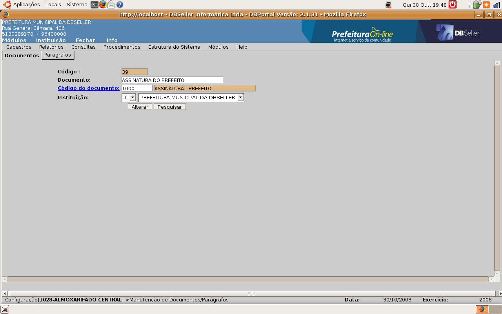
figura
031
Para a opção Inclusão temos os seguintes botões, Incluir, Pesquisar, Importar Documento e Importar Documento Padrão.
O botão incluir executa a criação de um novo documento e libera a aba de parágrafos para a manutenção.
O botão Importar Documento, importa um documento já criado no sistema para este documento, importa também os parágrafos incluídos. Ao clicar neste botão o sistema abre uma tela de seleção onde estão listados todos os documentos/parágrafos incluídos e ao selecionar uma delas o sistema ainda solicita a confirmação de processamento ou não desta operação.
Já o botão Importa Documento Padrão, busca o documento no item de Documentos/Parágrafo Padrão e importa, criando o novo documento. Assim como o outro botão de Importar, o sistema também solicita que seja confirmado o processamento de importação das informações.
Na aba de parágrafos podemos utilizar os seguintes botões: Selecionar Parágrafo, Incluir, Parágrafo Novo, Ordenar e Visualizar.
A figura 032 mostra esta tela.
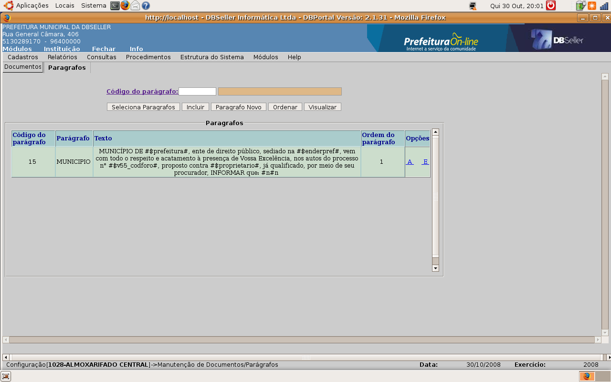
Figura
032
Pressionando o botão Selecionar Parágrafos o sistema mostrará uma tela onde poderemos selecionar vários outros parágrafos e incluí-los de uma vez só, facilitando a seleção dos mesmos e a manutenção deste programa.
Para o botão incluír, primeiramente precisamos acessar o campo Código do Parágrafo, será mostrada uma tela onde selecionamos um parágrafo e este será mostrado neste campo e após pressiona-se o botão incluir para efetivar o processamento.
No botão Parágrafo Novo podemos criar um novo parágrafo, podemos dar um título, colocar alinhamento, distância em pixes do início da linha, espaçamento entre as linhas e o conteúdo a ser impresso. No campo conteúdo podemos utilizar algumas variáveis, entre em contato com o suporte mais verificação das mesmas.
No botão Ordenar podemos trocar a ordem dos parágrafos incluídos, a ordem que será impressa no documento. O sistema irá mostrar uma tela com os parágrafos e o usuário poderá movimentar clicando nas setas com indicação para cima e para baixo.
O botão visualizar, processa o documento gerado e gera uma impressão bem sucinta dos parágrafos digitados no documento.
Esta opção assemelha-se no tratamento da opção inclusão, na aba de Documento possibilita-se que seja alterado as informações e utilizando-se do botão Alterar pode-se processa-las. O botão Pesquisar possibilita o acesso a tela que efetuamos a seleção no momento que acessamos este item.
Para a aba de Parágrafos, o procedimento de manipulação dos dados é o mesmo da opção de inclusão, não necessitando sua repetição.
A manutenção de Layouts tem por objetivo organizar os mais diversos tipos de layouts gerados no sistema, leiouts de geração de dados para as instituições financeiras, caged, contra cheques e outros.
Este item possui três abas de manipulação dos dados, sendo: Layout, Linhas e Campos.
Na aba Layout temos a identificação:
Código do Layout: Código sequencial de identificação do layout
Descrição: Descrição do Layout
Observações: Observação do Layout para melhor identificação
Quantidade de Linhas: Numero padrão de linhas do Layout
O botão Incluir será exibido e o Importar Layout. O botão incluir processa a inclusão dos dados informados acima e o botão Importar Layout mostrará uma lista dos layout e se selecionado mostrará na tela os botões de Importar e Novo. O botão Importar nesta ação, processará a importação de todas as linhas e campos cadastrados no Layout selecionado e o botão Novo redefinirá a tela de inclusão como se acessado novamente o item de menu.
O funcionamento padrão das abas de Linhas e Campos se dá da seguinte forma, para cada linha que estamos editando, podemos adicionar, retirar os campos na aba campos, mas quando não temos linha selecionada o sistema não permite a manipulação da aba Campos.
Na aba linha temos os seguintes campos:
Código da linha: Código identificador da linha
Código do layout: Código do Layout da Linha
Descrição: Descrição da Linha
Tipo de linha: Tipo da linha que será geradas, sendo: Header de arquivo,Header de lote, Registro, Trailler de lote, Trailler de arquivo
Tamanho da linha: Tamanho da linha
Observações: Observações para identificar a linha
Quebras antes: Quantidades de quebras antes do campo
Quebras depois: Quantidades de quebras depois do campo
Para esta aba o sistema apresenta dois botões, Incluir e Importar Linha, sendo o Incluir a inclusão de uma linha nova e Importar Linha a seleção de uma linha já incluída em qualquer outro documento. Ao ser pressionado o botão Importar Linha o sistema mostra uma tela para seleção e em selecionado um linha mostra os botões com as seguintes descrição: Importar Linha, Importar Linha e Campos e novo.
No botão Importar Linha, o sistema somente copiará os dados da linha selecionada anteriormente e incluirá neste Layout. No botão Importar Linha e Campos importará além dos dados das linhas todos os campos a ela adicionados. Já o botão novo fará com que o programa seja iniciado com se acessado pela primeira vez.
Para esta abas, existe uma janela onde será mostrada todas as linhas cadastradas para este layout, podendo se clicar do A ou E alterar ou excluir uma linha digitada. Este procedimento facilita a digitação de linhas, bem como alteração de seus dados e exclusão de alguma linha digitada indevidamente.
A figura 033 mostra a tela de linhas.
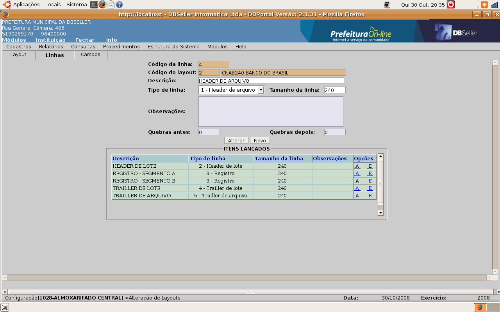
figura
033
Na aba Campos temos os seguintes dados:
Código do campo: Código identificador do campo
Código da linha: Código da linha gerada na aba linha
Nome do campo: Nome do Campos
Descrição do campo: Descrição do Campos
Código do Tipo de Formatação: Tipo de formatação do campo
Posição na linha: Posição na Linha
Espaço ocupado: Espaço ocupado na linha
Identificador da linha: Se este campo é um identificador de tipo de linha ( Sim / Não )
Imprimir valor: Imprimir valor padrão no campo ( Sim / Não )
Valor default: Valor padrão para o campo
Observações: Observações do Campo
Alinhamento: Esquerda ou Direita
Inserir quebra: Inserir quebra de linha após o campo
Cabe observar que o código do tipo de formatação, como é um link, lista todos os tipos de formatação cadastrados e atualiza este campos se selecionado.
Temos nesta aba, o botão incluir e Importar Campo, sendo o incluir o processamento da inclusão dos dados no sistema e o Importar Campo a seleção de um campos já incluído, nesta ou em qualquer outra linha deste ou de qualquer outro documento. Mostra uma tela com os campos a Importar e se selecionado um, atualiza a tela com todos os dados do campos selecionado e pressionando-se novamente o botão Incluir, processamos então a inclusão dos mesmos no banco de dados.
Assim como na aba linha, nesta aba também temos na parte inferior uma janela contendo todos os campos cadastrados para a linha em manutenção e podemos acessando o link A e E proceder com as ações de manutenção, alterando ou excluindo um campo quando necessário. Em acessando um destes links o sistema irá personalizar o botão para proceder com a modificação na base de dados.
A diferença da alteração para a inclusão é que na abas Documento pode-se alterar os dados do documento escolhido, como descrição por exemplo, mas, as abas linha e campos segue com o mesmo funcionamento da inclusão.
No caso da exclusão, o sistema ao ser acessado o item, mostra uma tela de seleção e após selecionado, mostra o botão Excluir e não libera as abas de linha e campos para visualização.
Ao selecionar um documento e pressionar o botão excluir o sistema eliminará todos os dados referente a este documento, suas linhas e campos.
O objetivo deste item de menu é guardar os dados padrões dos documentos utilizados pelo DBPortal para os mais diversos formulários criados no sistema. Estes documentos são utilizados exclusivamente pelo DBPortal e sua manutenção não deverá ser acessada pelo Cliente.
A inclusão deste item funciona da mesma forma do item Documento/Parágrafos acima descrito e documentado.
A Alteração deste item funciona da mesma forma do item Documento/Parágrafos acima descrito e documentado.
Esta opção, serve para que o sistema saiba quem pode ou não alterar a base de dados clicando no Link Info da tela superior do DBPortal. Este link destina-se a troca de base dedados para podermos eventualmente estar testando ou até mesmo processando algumas informações em outra base.
Este procedimento é bastante utilizado quando do cálculo de IPTU para um novo exercício, onde gostaríamos de fazer algumas simulações cálculo, modificando parâmetros e outros sem comprometer a base de dados real e fiel do sistema.
Este item de menu não possui programa ligado ao mesmo, serve somente como identificador de permissão.
Esta opção destina-se ao controle de acesso ao sistema, possui três tipos de ações:
On Line: O sistema esta ativo e pode ser acessado por qualquer usuário que tenha login e senha e que possa acessar o mesmo.
Não Permite Novos Logs: O sistema em ativo, mas não permite que mais usuários acessem o mesmo. esta opção é válida quando necessitamos desativar o sistema mas temos usuários conectados. Então colocamos neste estado até saírem todos os usuários.
Off Line: O sistema está desativado e não permitirá nenhum tipo de acesso, não permitirá que nenhum usuário acesse nenhuma das páginas, significa que vai deslogar todos os usuários no próximo movimento que ele fizer no sistema.
Ativar e desativar trace log, é uma opção usitlizada pela programação quando necessitamos verificar os procedimentos de consulta de um determinado programa. Esta opção é configurada por sessão de acesso, pois um usuário pode estar com esta opção ativada e outro não.
Esta rotina é de exclusivo acesso dos Adminstradores do sistema e seu uso deverá ser sempre em conjunto com o suporte do DBPortal.
Esta rotina é de exclusivo acesso dos Adminstradores do sistema e seu uso deverá ser sempre em conjunto com o suporte do DBPortal.
Esta opção destina a inclusão de tela de login padrão. Tela de login padrão é a tela inicial do sistema personalizada.
Primeiro crie um arquivo com o nome padrão de login_<coplemento de identificação>.php ex : login_ecidade.php, login_dbseller.php, e salve na pasta templates no diretorio do e-cidade.
Configurar o arquivo require_extensions.xml da pasta config no diretório do e-cidade para redirecionar para o novo arquivo criado. Para isso devemos alterar os atributos .
<template_login label='Tela de Login do Sistema' src='templates/login_dbseller.php'></template_login>
ATENÇÃO: Não colocar o nome do arquivo como index.php por padrão nesse diretório já existe um arquivo com esse nome.
Após edite o arquivo criado para nova tela de login, devemos incluir os arquivos padrão de javascript :
<script language="JavaScript" type="text/javascript" src="scripts/md5.js"></script>
<script language="JavaScript" type="text/javascript" src="scripts/strings.js"></script>
<script language="JavaScript" type="text/javascript" src="scripts/prototype.js"></script>
Na tag <form> deve ser colocado o nome como form1 <form method="post" name="form1">.
Os elementos da tela (campos usuário, senha e botão de login) devem ter os atributos name e id conforme padrão que segue :
<input name="login" id='usu_login'>
<input name="senha" id='usu_senha' type="password">
<input name="btnlogar" type="button" class="botao" id="btnlogar" value="Acessar">
No arquivo login.php no diretório do e-cidade no conteúdo da tag <script></script>,
por padrão possui a função function js_addevent() que contem os eventos de cada <input > da tela de login.
Essa função deve ser chamada no evento onload da tag <body> no seu arquivo de login novo, <body onload="js_addevent()">.
<html>
<head>
<title>Tela de acesso ao e-cidade</title>
<script language="JavaScript" type="text/javascript" src="scripts/md5.js"></script>
<script language="JavaScript" type="text/javascript" src="scripts/strings.js"></script>
<script language="JavaScript" type="text/javascript" src="scripts/prototype.js"></script>
<link href="estilos.css" rel="stylesheet" type="text/css">
</head>
<body background="#EEEEEE" onload="js_addevent()">
<form method="post" name="form1">
<table width="30%" cellpadding="0" cellspacing="0" bgcolor="#7F7F7F" align="center">
<tr>
<td> </td>
</tr>
<tr>
<td>
<font size="3" color="white">Usuário:</font>
</td>
<td align="left">
<input size="25" name="login" id='usu_login'>
<td>
</tr>
<tr>
<td>
<font size="3" color="white">Senha:</font>
</td>
<td align="left">
<input size="25" name="senha" id='usu_senha' type="password">
<td>
</tr>
<tr>
<td colspan="2">
<input name="btnlogar" type="button" class="botao" id="btnlogar" value="Acessar">
<span id="testaLogin" style="color: red; font-weight: bold; text-align: center"> </span>
<td>
</tr>
<tr>
<td> </td>
</tr>
</table>
<table width="30%" cellpadding="0" cellspacing="0" align="center">
<tr>
<td height="200" align="center" >
<a href="http://www.dbseller.com.br">
<img border="none" src="imagens/logo_dbseller_o.gif" width="181" height="62">
</a>
</td>
</tr>
</table>
</form>
</body>
</html>
ATENÇÃO: Se for necessário acrescentar algum estilo(stylesheet) na página de login deve ser incluído no mesmo arquivo login_<coplemento de identificação>.php
Após editar o arquivo criado para nova tela de login, devemos fazer upload do fonte.
Nome do Arquivo: Inclui um nome para o arquivo(login_<coplemento de identificação>).
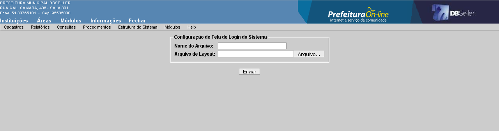
Esta opção destina inclusão de módulos. Entende-se por módulos o conjunto de tabelas, como organizamos os dados dentro do banco de dados.
Esta opção destina inclusão de tabelas. Tabelas são a identificação do agrupamento de campos. Identificam um conjunto de tipos de dados diferentes ou não que identificam um pessoa, um objeto, etc.
Esta opção destina inclusão de campos. Campos são atributos que desejamos guardar de um determinado dado, por exemplo: nome de uma pessoa, descrição de um objeto, código, etc.
Esta opção destina a consulta do dicionário de dados do sistema. Lista todos os módulos de controle de dados, todos os arquivos, campos das tabelas, índices dos campos, chaves estrangeiras, sequencias e outros dados pertinentes ao mesmo.
Esta opção destina à ligar todos os campos às tabelas, montar o dicionário de atributos e identificações que utilizaremos para compor o sistema.
Este cadastro documenta as funções que utilizamos no sistema, funções estas executadas no bando de dados.
Este cadastro documenta as triggers, gatilhos que são processados quando da movimentação de informações nos campos dos arquivos do banco de dados. São utilizados normalmente para validação das informações inseridas entre os mais diversos cadastros do sistema.
Este cadastro documenta as as sequências geradas para os campos, em sua grande maioria campos com contagem automática e que não podem se repetir.
Este cadastro documenta todas as classes de manipulação de dados e regras de negócio que utilizamos e que o gerador de programa não atende.
Esta rotina gera um arquivo contendo a estrutura do sistema.
Esta rotina gera todos os arquivos necessários para manipulação dos dados do DBPortal, gera os itens de menu e outros dados.
Esta rotina processa a validação das estruturas dos arquivos com a base de dados atual, para podermos validar se algo foi modificado na base e não foi alterado no dicionário de dados.
Esta rotina mostra a ligação entre os mais diversos campos de dados do sistema. Identifica quando um campos que identifica um determinado dado esta em um ou mais tabelas do sistema.
|
DBSeller Serviços de Informática Ltda. – www.dbseller.com.br Rua General Câmara, 406/301 – Porto Alegre (RS) – Fone: (51) 3076-5101 |
Versão – 2.1.81 |